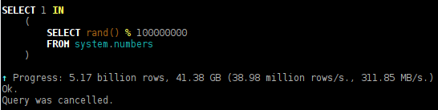

Since 2008, I worked on the data processing engine for Yandex.Metrica.
I write in C++.
Where Good Hash Tables are Needed
GROUP BY
SELECT DISTINCT
IN, JOIN
And also:
— uniqExact, uniq;
— arrayEnumerateUniq;
— LIMIT BY.
What is a Hash Table
How do Hash Tables differ from Lookup Tables?
1. Hashing.
2. Collision resolution.
3. Resizes.
All points are not mandatory.
Example: direct mapped cache.
Hashing
xkcd.com
A magical technique that permeates all software engineering & computer science.
Used everywhere.
Search algorithms, machine learning, distributed systems, data compression, sketching data structures...
Mistakes in Hash Function Selection
1. Using a trivial hash function
hash(x) = x
This is how it's done in the standard library implementation (std::hash) in libstdc++ and libc++ for integers.
Why a trivial hash function is bad.
Example: let's count how many times each user was on the internet.
Input — array of yandexuid. yandexuid — UInt64
for (const auto & key : data)
++map[key];
Total 100,000,000 visits, containing 17,630,976 different yandexuid.
value_type — 16 bytes, RAM approximately 260 MB — doesn't fit in LL cache.
What is yandexuid: concat(rand, timestamp). Lower bits — unix timestamp with seconds precision.
SELECT toHour(EventTime) * 60 + toMinute(EventTime) AS k,
count() AS c FROM hits_all
WHERE EventDate >= today() - 365 GROUP BY k ORDER BY k
INTO OUTFILE 'minutes.tsv' FORMAT TabSeparated
Elapsed: 800.580 sec. Processed 4.33 trillion rows
How much worse is a trivial hash function
std::unordered_map
— no difference in performance (10.319 vs 10.279 sec)
google::dense_hash_map
— performance difference: 3.156 vs 81.86 sec — 26 times
ClickHouse HashMap
— performance difference: 2.527 vs 10.264 sec — 4 times
2. Mistakes when combining hash functions
hash(x, y) = hash(x) ^ hash(y)
— terrible, don't do this
hash(x, y) = hash(hash(x) ^ y)
— you can do this, but often you can do better
3. Using for fixed-length types a hash function intended for strings.
— hash functions for strings generally don't inline;
— they contain many branches — variations
on the theme of duff device for fast path loops and tail handling,
all this is unnecessary when hashing fixed-length types.
Use different hash functions for directly or indirectly
related data structures.
Example: for data sharding
and for hash tables when processing this data.
☠ Leads to slowdown by multiple times or complete lockup!
Sometimes choosing multiple hash functions from the same family
is not a good enough solution.
Example: hash(x, seed) = hash(x ^ seed)— often not good enough,
if part of hash operations commute with xor.
5. Using outdated slow low-quality hash functions
Example: libstdc++ from gcc 7 uses FNV1a for strings.
This hash function contains a loop over bytes,
can only work fast for short strings,
but for short strings the quality is too low.
5. Using outdated slow low-quality hash functions
Example: Making 5 million inserts.
PageCharset — short repeating strings (windows-1251, utf-8)
For different algorithms, different
criteria for hash function quality make sense.
A hash function can be quality
for linear probing open addressing hash table,
but not quality for HyperLogLog.
Examples of hash functions for integers
1. Murmur finalizer
inline UInt64 intHash64(UInt64 x)
{
x ^= x >> 33;
x *= 0xff51afd7ed558ccdULL;
x ^= x >> 33;
x *= 0xc4ceb9fe1a85ec53ULL;
x ^= x >> 33;
return x;
}
2.5 "rounds" consisting of xor-shift and multiplication.
(city, farm, metro hash use roughly the same thing)
latency of multiplication — 3 cycles, xor and shift — 1 cycle,
there's no instruction level parallelism in one hash function,
so total latency is approximately 12 cycles.
1. Murmur finalizer
Advantages:
— good quality;
— independent calculation of multiple hashes vectorizes
(gcc, clang even do this themselves);
— instruction-parallel independent calculation of multiple hashes;
— clear meaning.
Disadvantages:
— when hash table fits in L1..L2 cache, overhead is still large.
(can be reduced to 1..1.5 rounds if quality is acceptable)
Disadvantages:
— only 32 bits
— zero quality by Avalanche and Bit Independence Criteria
because crc commutes with xor:
crc(x ^ y) = crc(x) ^ crc(y)
meaning when changing the n-th bit of x,
the m-th bit of crc(x) changes or doesn't change
depending on n, but independently of x.
each bit of crc is xor of some bits of x.
Advantages:
— works well in practice in hash tables
Advantages:
— suitable for fat objects;
— suitable for non-movable objects;
— suitable for intrusive containers;
— node-based container, pointers to nodes don't invalidate
(note, iterators invalidate);
— no mutual influence of collision resolution chains
— positive feedback on chain growth;
— more tolerant of bad hash function and large load factor.
1. Chaining
Disadvantages:
— low cache locality;
— load on allocator;
— large memory overhead for small values;
2. Open-Addressing
(closed hashing; with internal collision resolution chains)
Examples:
ClickHouse HashMap, sparse_hash_map,
dense_hash_map, HashMap in Rust.
Disadvantages:
— very sensitive to hash function choice;
— for example, work absolutely badly with trivial hash function;
— variety of memory layout and collision resolution options,
need to choose for specific task;
— strong performance degradation
when storing large objects inplace;
Advantages:
— when used correctly, work fast :)
Other Options
Not necessarily lists.
Other external explicit structures for collision resolution:
— contiguous arrays;
— balanced trees (example: HashMap in Java).
Chaining with first cell inplace;
— combine disadvantages of chaining and open-addressing;
— can use combined variant for multiset/multimap.
Memory Layout Options for open-addressing hash table
How to indicate that a cell is occupied?
1. Explicitly — occupancy bit in each cell.
2. Implicitly — absence of value denoted by zero key,
and element with zero key stored separately.
Memory Layout Options for open-addressing hash table
— simple array of cells;
— unusual array of cells — sparse array (example: sparse_hash_map);
— two-level array;
— array with address translation (indirect addressing);
— two arrays of cells — one for key, another for mapped;
— two or more arrays of cells for cuckoo hash table;
— array of cells + bit masks;
What additional information can be stored in cells
— hash value — for shortcut comparison of heavy keys;
to avoid repeated calculations during resizes;
— version number for instant hash table clearing;
— information on how far away the element is
with the corresponding hash modulo value;
— pointers forming collision resolution chain
as in chaining hash table;
— atomics and even mutexes for locking.
Collision Resolution Methods
What does insert and lookup hit in hash tables?
1. When everything fits in L1..L2 cache (sometimes L3 cache):
— hash function calculation;
— collision resolution chain traversal
(branches, arithmetic, sometimes just many instructions);
— element equality comparison.
2. When everything doesn't fit in LL cache (sometimes only in L3 cache):
— random memory reads.
What does insert and lookup hit?

Linear probing
Advantages:
— excellent cache locality;
— very simple;
— fastest given equal chain lengths;
Disadvantages:
— most finicky method;
— doesn't tolerate large fill factor.
Average complexity of lookup in hash table:
O(n^2), where n is average collision resolution chain length.
Quadratic probing
Advantages:
— decent cache locality;
— only slightly more complex than linear probing;
— slightly less finicky;
Example: used in dense_hash_map.
Double hashing
Disadvantages:
— poor cache locality;
— more complex in implementation and usage;
— less efficient given equal chain lengths;
Advantages:
— not finicky.
Bonus:
— useful not only for hash tables
For example, for Bloom Filter two hash functions are enough
to generate a family of hash functions:
hash(x, k) = hash1(x) + k * hash2(x)
Linear probing with Robin Hood hashing:
Disadvantages:
— slightly slower than linear probing
given equal chain lengths;
— need to compute more or store
hash function value for cells;
Advantages:
— same cache locality as linear probing;
— average chain lengths substantially less than linear probing;
— hash table becomes almost completely
ordered by hash function modulo,
which can be used in other algorithms.
Example: HashMap in Rust.
Cuckoo hashing
Advantages:
— O(1) lookup
Disadvantages:
— two (on average one and a half)
random memory accesses instead of one
— complex inserts
— what max fill to use;
— by how much to resize;
— what hash table size to take;
— how to allocate and initialize memory;
— how to move elements;
What max fill to use
0.5
— perfectly suitable for most finicky variants,
— if memory overhead is not a big concern;
— with max fill = 0.5 and resize by two, maximum overhead is 4 times.
More — unacceptable for linear probing.
Only for Robin Hood (not always) and double hashing.
By how much to resize
By two (or close).
— this is almost the only option if size is power of two;
While hash table is small, can do 4 times.
— since memory overhead doesn't matter;
— but benefit from this is small;
Other options:
By 1.5 times; by golden ratio?
— complex, meaningless, expensive.
Use arrays of chunks
with indirect addressing and add chunks.
— complex, expensive.
Prime number close to 2n
Disadvantages:
— division with remainder — very slow
— if constant is compile time,
compiler replaces with multiplications and shifts
— to be compile time,
have to use switch/case with all variants
— although branch is well predicted,
still ends up slow
Prime number close to 2n
False advantage:
— masks low quality hash function;
Why false:
Improved quality of element distribution
is similar to choosing higher quality hash function,
but remainder of division is too expensive a way to improve quality.
It makes sense to encapsulate distribution quality inside hash function.
Possibly, using prime number for size is absurd.
std::unordered_map uses exactly this absurdity.
How to allocate and initialize memory
If empty cell is represented by zero bytes,
then can use mmap or calloc.
During resize, can use mremap or realloc for inplace resize.
But:
— mmap is monstrously slow;
— calloc in almost all allocators is completely useless
(works through malloc, memset);
— realloc in almost all allocators is completely useless
(works through malloc, memcpy, free);
— also note that std::allocator
doesn't even have interface for realloc or calloc.
How slow is mmap
~ 2000 calls of mmap, page fault, munmap per second,
regardless of number of cores.
Why mmap is slow:
— system call;
— changing data structures in kernel;
— TLB cache flush;
— page fault.
How slow is mmap
Can use mmap, munmap, mremap
only for large chunks of memory.
64 MiB
(suppose we can work with memory at 50 GB/sec speed;
suppose we want mmap overhead to be no more than half;
suppose mmap can be done only 1000 times per second)
Actually all allocators already use mmap,
if chunk of memory is large, but:
— suffer from using mmap
for insufficiently large chunks of memory;
— don't use mremap for realloc even in this case;
So it makes sense to use mmap manually.
How to move elements
1. Allocate new array, insert all elements there.
Advantages: trivial.
How to move elements
2. Expand array by two. Right half will be empty.
Given that array size is always power of two, on average
— slightly less than half of elements stay in place;
— half of elements move to new place on the right;
— some part of elements move slightly left because
previous ones in collision resolution chain
moved to right half.
Advantages:
— this is really more efficient;
— allocate less temporary memory;
— better cache locality;
Disadvantages:
— complex algorithm, easy to make mistakes;
How to move elements
3. Amortized resize
— do resize gradually,
spreading complexity over time of inserting new elements.
Advantages:
— latency control;
Disadvantages:
— throughput will be worse;
— more complex implementation;
— need up to two random memory accesses instead of one.
Optimizations that don't work
Optimizations that don't work
Resize when chain becomes long
— collision resolution chain length
is a heavy-tailed distribution,
and maximum length in case of linear probing
becomes large too early.
Optimizations that don't work
Get rid of overlap
— meaningless, because in case of
2n hash table size, overlap
is bit and with mask,
and this is a very simple operation,
which doesn't reduce throughput
thanks to instruction level parallelism.
Optimizations that don't work
Move resize condition outside loop
/// This is a loop:
for (const auto & key : data)
++map[key]; /// And here resize can be called.
if (there is enough space)
for (batch of data)
insert into map without
possibility of resize;
— in this case well-predicted
branch costs nothing
Optimizations that work
Optimizations that work
mmap, mremap for large sizes
if (old_size < MMAP_THRESHOLD && new_size < MMAP_THRESHOLD
&& alignment <= MALLOC_MIN_ALIGNMENT)
{
...
}
else if (old_size >= MMAP_THRESHOLD && new_size >= MMAP_THRESHOLD)
{
...
buf = mremap(buf, old_size, new_size, MREMAP_MAYMOVE);
if (MAP_FAILED == buf)
DB::throwFromErrno("Allocator: Cannot mremap memory chunk...
/// No need for zero-fill, because mmap guarantees it.
}
else
{
...
}
Optimizations that work
Inplace resizes
/** Now some items may need to be moved to a new location.
* The element can stay in place, or move to a new location "on the right",
* or move to the left of the collision resolution chain, because
* the elements to the left of it have been moved to the new "right" location.
*/
size_t i = 0;
for (; i < old_size; ++i)
if (!buf[i].isZero(*this) && !buf[i].isDeleted())
reinsert(buf[i], buf[i].getHash(*this));
/** There is also a special case:
* if the element was to be at the end of the old buffer, [ x]
* but is at the beginning because of the collision resolution chain, [o x]
* then after resizing, it will first be out of place again, [ xo ]
* and in order to transfer it where necessary,
* after transferring all the elements from the old halves you need to [ o x ]
* process tail from the collision resolution chain immediately after it [ o x ]
*/
for (; !buf[i].isZero(*this) && !buf[i].isDeleted(); ++i)
reinsert(buf[i], buf[i].getHash(*this));
Optimizations that work
Shortcut for consecutive identical key values
typename Method::Key prev_key;
for (size_t i = 0; i < rows; ++i)
{
/// Get the key to insert into the hash table.
typename Method::Key key = state.getKey(...);
/// Optimization for consecutive identical keys.
if (!Method::no_consecutive_keys_optimization)
{
if (i != 0 && key == prev_key)
{
/// Add values to the aggregate functions.
continue;
}
else
prev_key = key;
}
method.data.emplace(key, it, inserted);
/// Add values to the aggregate functions.
}
Predicting hash table size before creating it
Storing aggregate function states
inplace in hash table if they're small
Storing aggregate function states
inplace in hash table, and if they're large,
then splitting into two arrays — keys and values separately
Storing short string keys inplace in hash table
with splitting into multiple hash tables
by power-of-two size classes
Unrolled speculative probing
SIMD probing
Hash tables for complex keys
For strings:
— stack strings consecutively in Arena,
store StringRef in hash table
(std::string_view, std::pair<const char *, size_t>).
For tuples:
— if tuple is small, pack it
into 64 or 128 or 256 bits and use as key;
— if tuple is large, serialize it into Arena
and work as with string key.